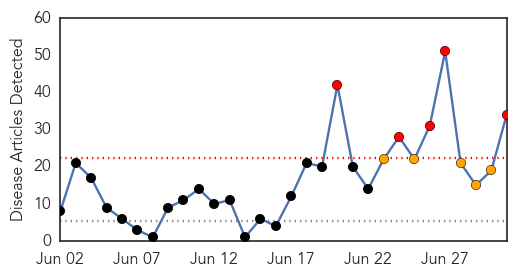
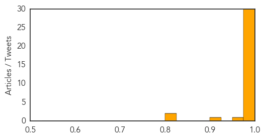

Ebola
30-Day Web Trend
5 alerts, 5 warnings

30-Day Twitter Trend
3 alerts, 0 warnings

Article Locations


Article Confidences
Top Articles:
- 1.000
- Ebola virus disease, West Africa – update
- 1.000
- Ebola death toll in West Africa rise to 467
- 1.000
- Fear, suspicion undermine West Africa's battle against Ebola
- 1.000
- Ebola epidemic 'out of control'
- 1.000
- Death toll in West African Ebola outbreak rises sharply to 467
- 1.000
- Liberia To Prosecute People Hiding Ebola Patients
- 1.000
- WHO to Gather Experts to Analyze Ebola Response
- 1.000
- World Health Organisation: Ebola Epidemic in West Africa is Worst on Record
- 1.000
- Ebola Death Toll Rises To 467 In West Africa
- 1.000
- Guinea Ebola Outbreak Is Worst Ever
- 1.000
- Crisis meeting as Ebola death toll rises in West Africa
- 1.000
- Ebola: WHO calls emergency talks on outbreak
- 1.000
- Ebola outbreak deaths surge to 467
- 1.000
- Africa Battles To Stop Deadly Spread Of Ebola
- 1.000
- Death Toll Rises In 'Totally Out Of Control' Ebola Outbreak
- 0.999
- Liberian president warns against hiding Ebola patients
- 0.999
- Ebola toll jumps to 467, worst outbreak on record
- 0.999
- Kenya : Fear, suspicion undermine West Africa's battle against Ebola
- 0.999
- WHO issues Ebola warning, infection rate jumps
- 0.999
- UPDATE 2-Ebola toll jumps to 467 as ministers mull response
- 0.999
- UPDATE 2-Ebola toll jumps to 467 as ministers mull response
- 0.998
- West Africa Ebola Toll Rises to 467
- 0.998
- Other voices: Ebola, unchecked
- 0.998
- World Health Organization To Coordinate With Airlines, Miners And Doctors To Stop Outbreak
- 0.996
- WHO: Ebola outbreak in West Africa kills 467
- 0.996
- West Africa’s Ebola death toll at 467 - Africa
- 0.994
- Ebola death toll rises to 467 out of 759 cases - WHO
- 0.991
- #Liberia warns against hiding #Ebola patients
- 0.988
- The worst Ebola outbreak in history
- 0.983
- Medical missionaries risk infection battling deadly outbreak
- 0.968
- Samaritan's Purse sending Canadian medical specialists to Liberia to fight deadly Ebola virus -- CALGARY, June 30, 2014
- 0.916
- RED CROSS TO PARTICIPATE IN SPECIAL MINISTERIAL MEETING ON EBOLA VIRUS DISEASE IN WEST AFRICA
- 0.823
- West and Central Africa Region Weekly Regional Humanitarian Snapshot (24 June - 01 July 2014) - Guinea
- 0.807
- Staying Safe Inside Liberia's Ebola Zone
Top Tweets:
-
No tweets found for Jul 01, 2014
Unknown
30-Day Web Trend
0 alerts, 0 warnings

30-Day Twitter Trend
1 alerts, 0 warnings

Article Locations


Article Confidences

Top Articles:
- 0.986
- the edge of knowledge
- 0.983
- 8th Legionnaires' case confirmed; cases now suspected beyond health facilities
- 0.917
- Chicago Tribune
- 0.917
- Chicago Tribune
- 0.917
- Chicago Tribune
- 0.917
- Chicago Tribune
- 0.917
- Chicago Tribune
- 0.917
- Chicago Tribune
- 0.917
- Chicago Tribune
- 0.917
- Chicago Tribune
- 0.917
- Chicago Tribune
- 0.917
- Chicago Tribune
- 0.917
- Chicago Tribune
- 0.917
- Chicago Tribune
- 0.917
- Chicago Tribune
- 0.917
- Chicago Tribune
- 0.917
- Chicago Tribune
- 0.910
- The world windows to Thailand
- 0.867
- Camel deaths in Ibb raise MERS concerns
- 0.866
- News, Information and Connections for Action
- 0.866
- CAMBODIA PRESS-Cambodia, China drafting agreement to curb bride trafficking
- 0.866
- ISIL leader vows revenge for wrongs committed against Muslims
- 0.866
- Putin vows to protect ethnic Russians abroad after Ukraine truce expires
- 0.866
- Russia's Putin accuses Ukraine of using "blackmail" in gas talks
- 0.866
- UN rights office urges restraint after Israeli teens' bodies found
- 0.866
- Japan will not take part in combat like Gulf, Iraq wars
- 0.866
- Russia hints at US influence in Ukraine's decision on truce
- 0.866
- Russia's parliamentary speaker wants new ceasefire in east Ukraine
- 0.858
- Patients recruited for vital studies on MERSHealthcare
- 0.809
- Codex panel framing new guidelines on global food trade
- 0.807
- Health Ministry urges vaccinations against encephalitis
- 0.783
- Third baby in feed probe dies
- 0.766
- Boy with Japanese Encephalitis out of danger zone
- 0.763
- Student down with Japanese Encephalitis shows improvement, says doctor
- 0.701
- CDC says anthrax exposure ‘highly unlikely’
- 0.680
- Patients Killed in Beds, Health Care Destroyed in South Sudan
- 0.679
- No CDC Lab Workers Seem Sickened by Anthrax: Report
- 0.660
- Legionnaires Reported at Winston-Salem Nursing Facility
- 0.656
- Dr. Steven N. Rice Now Offers Laser Gum Disease Treatment to Germantown, MD Residents
- 0.643
- Russia put restrictions of pork imports from Latvia due to African Swine Fever (ASF) - Agribusiness - Agri.eu
- 0.640
- Latvia may declare state of emergency to cope with African swine fever
- 0.636
- Latvia may declare state of emergency to cope with African swine fever
- 0.614
- South Sudan Conflict: Violence Against Healthcare - South Sudan
- 0.604
- U.S. CDC tests suggest anthrax exposures 'highly unlikely'
- 0.595
- CDC tests suggest anthrax exposures 'highly unlikely'
- 0.594
- These 'top ten' parasites in your food can kill you: UN
- 0.576
- Video: Top Kurdish spy chief says French jihadists fighting in Iraq
- 0.576
- US pressure on French banks ‘blackmail’ over warship sale, Putin says
- 0.571
- WMBFNews.com, Myrtle Beach/Florence SC, Weather
- 0.568
- Former French president Sarkozy detained for questioning
Showing top 50 articles...
Top Tweets:
-
No tweets found for Jul 01, 2014